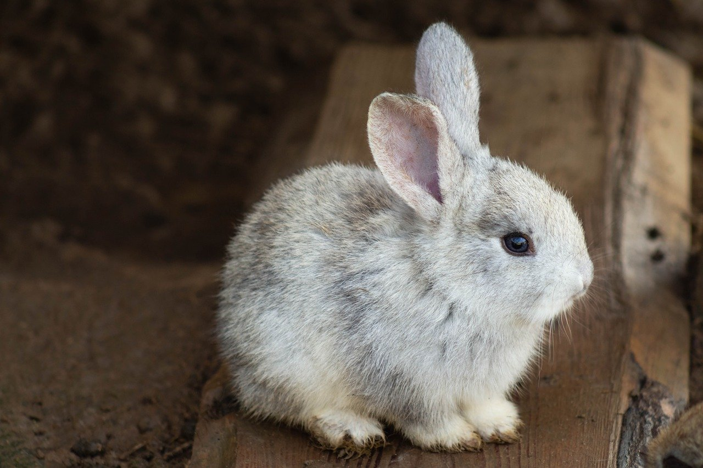
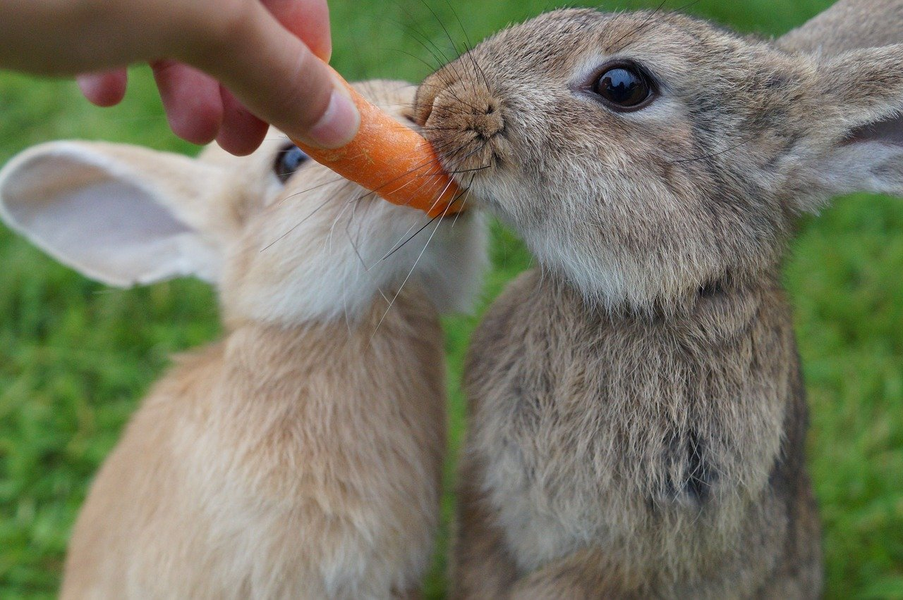
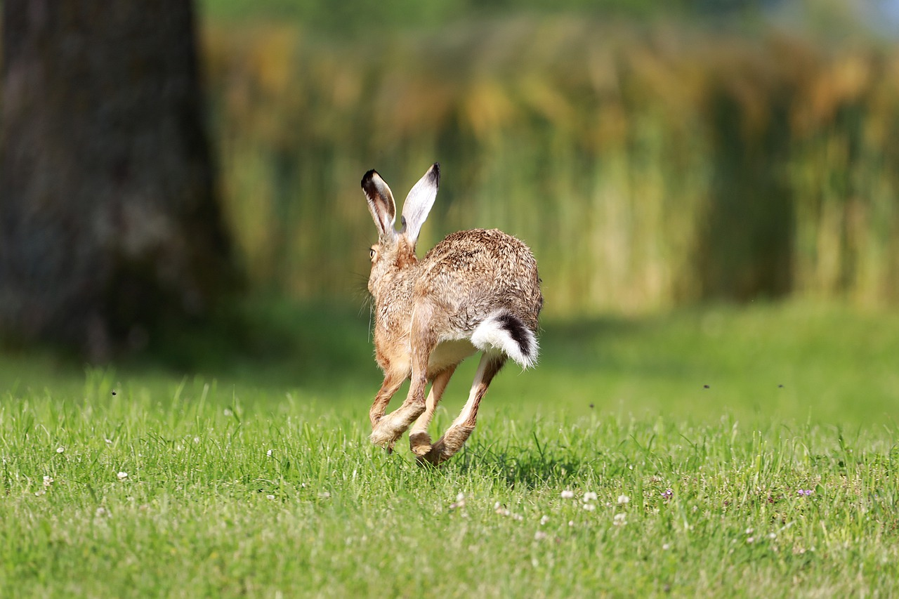

1.分類
学名︰Leporinae Trouessart
最も広義にはウサギ目、狭義にはウサギ科、さらに狭義にはウサギ亜科もしくはノウサギ亜科の総称である。
現在の分類では、ウサギ亜科には全ての現生ウサギ科を含めるが、かつては一部を含めない分類もあった。ウサギ目はウサギ科以外に、ナキウサギ科と絶滅したプロラグスなどを含む。
2.身体的特徴
他の獣と比しての特徴としては、耳介が大型なことが挙げられる。ウサギ目内では耳介があまり発達していない種でも、他の哺乳綱の分類群との比較においては耳介比率が大きいといえる。音や風のするほうへ耳の正面が向くよう、耳介を動かすことができる。また、毛細血管が透けて見えるこの大きな耳介を風にあてることで体温調節に役立てるともいう。
眼は頭部の上部側面にあり広い視野を確保することができ、夜間や薄明薄暮時の活動に適している。鼻には縦に割れ目があり、上部の皮膚を可動させることで鼻孔を開閉することができる。門歯は発達し、一生伸びつづける。
3.生態的特徴
草原や半砂漠地帯、雪原、森林、湿原などに生息する。アナウサギは地中に複雑な巣穴を掘って集団で生活する。縄張り意識は比較的強く、顎下の臭腺をこすりつける事で臭いをつけてテリトリーを主張する。ノウサギは穴での生活はしない。
声帯を持たないため滅多に鳴く事はないが、代わりに非言語コミュニケーションを用いる。代表的なものは発達した後脚を地面に強く打ち付けるスタンピングで、その主な動機は天敵が接近した場合に仲間に警戒を促すためであるが、不快な感情を表す際にもこの行動をとる事がある。
4.食性／繁殖
食性
食性は植物食で、草や木の葉、樹皮、果実などを食べる。一部の野生種は昆虫なども食べるという。カイウサギであれば、屋外のアリなども舐めながら食べる。
時折、背を丸めて直接肛門に口を持っていき、口をモグモグとする行動を観察できるが、これは「食糞行動」といい、未消化になった植物繊維等を含んだ糞を再度食べて消化と栄養の再吸収を促す行為であり、異常行動ではない。
繁殖
胎生。ネコなどと同じく、交尾により排卵が誘発される交尾排卵動物。妊娠期間は最長がユキウサギの約50日で、多くの種は30･40日。一度の出産で1･6頭（ないしそれ以上）を出産する。
5.生息分布
南極大陸や一部の離島を除く世界中の陸地に分布している。ペットとして持ち込まれたものも多く、オーストラリア大陸やマダガスカル島には元々は生息していなかった。 日本では、各地の縄文時代の貝塚からウサギの骨が出土することや、古事記の「因幡の白兎」などに登場することなどから、そのころには既にかなりの数が棲息していたものと考えられる。
6.起源／歴史
「ウサギは一匹だけでいると寂しくて死ぬ」という言葉を耳にする人が多いがこれは間違い。ウサギは寂しいという感情で死ぬことはない。1993年の「ひとつ屋根の下」のドラマのセリフで「うさぎって寂しいと死んじゃう」という言い回しが劇中ヒロインによって使われたことから広まってしまった。
野ウサギは昔から食料や毛皮、遊興などの目的で狩猟の対象とされている。特に欧米では、ウサギのハンティングは文化的なスポーツとして扱われている。
